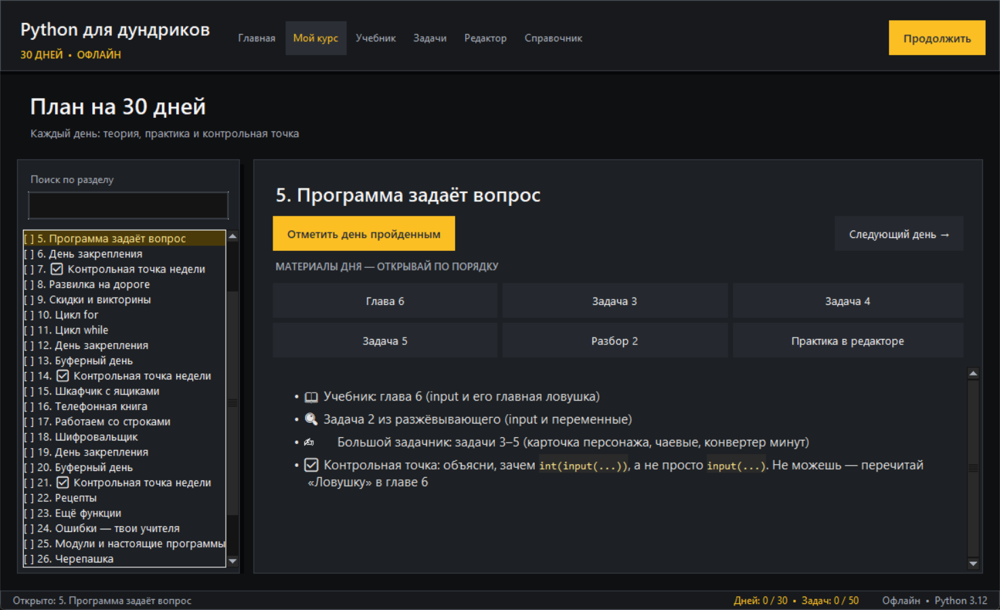
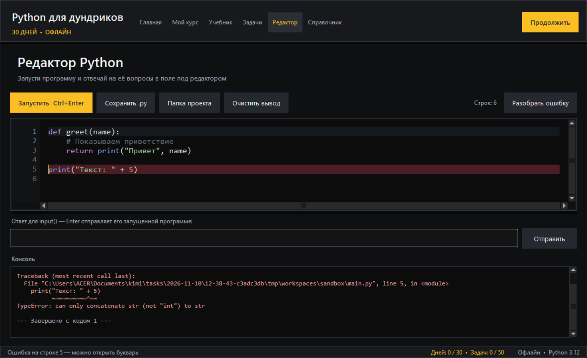
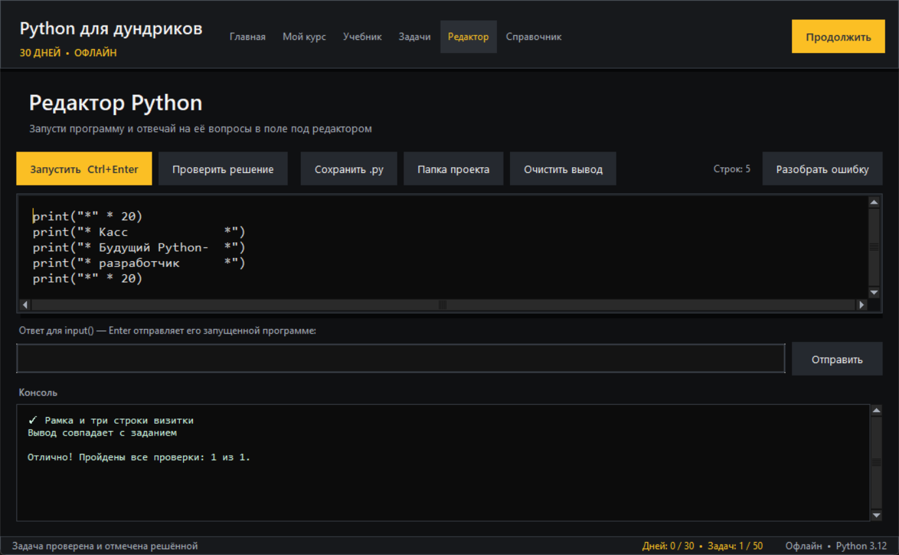
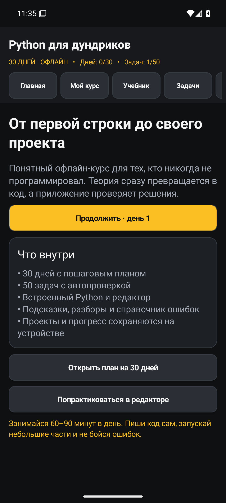

План по дням
Нужные главы, разборы и задачи открываются прямо из каждого дня. Не придётся искать их вручную.
Понятный курс для тех, кто никогда не программировал. Теория сразу превращается в код, а приложение само проверяет решения и помогает не застрять.

Приложение ведёт по маршруту, запускает программы, проверяет их работу и сохраняет прогресс на твоём компьютере.
Нужные главы, разборы и задачи открываются прямо из каждого дня. Не придётся искать их вручную.
Несколько сценариев для каждой задачи. Видно, что именно работает и что ещё нужно исправить.
Сначала направление, затем более конкретная помощь. Готовое решение не подменяет самостоятельную работу.
Черновики, проекты и пройденные дни остаются на компьютере. Всё работает без интернета и аккаунта.
Встроенный редактор подсвечивает Python, помогает с отступами и показывает строку ошибки. Вопросы программы и ответы появляются в живой консоли.


Для каждой задачи есть отдельные тестовые случаи и три постепенные подсказки. После успешной проверки задача засчитывается автоматически.

Нативное мобильное приложение с теми же 30 днями и 50 задачами. Python, проверки и материалы работают без интернета.
Административные права и отдельная установка Python не нужны.
Один файл Python30_Beta_Setup.exe содержит приложение и все учебные материалы.
Следуй шагам установщика. При желании выбери другую папку и отключи ярлык на рабочем столе.
Открой приложение через ярлык на рабочем столе или в меню «Пуск» и запусти первую программу.
Бета-версия для Windows с полным курсом, 50 задачами, автопроверкой и проектами. Скачивание не требует регистрации.
Нет. Python, редактор, учебник и автопроверки уже встроены в приложение.
Да. После скачивания и установки все уроки, задачи, справочники и проверки работают офлайн.
Во внутреннем хранилище приложения на твоём компьютере или телефоне. Они не отправляются на сервер. При удалении Windows-версии прогресс сохраняется; Android удаляет данные вместе с приложением.
Windows-приложение и установщик пока не имеют цифровой подписи издателя. Скачивай их только из проверенного источника.